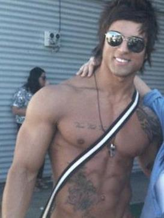

Aziz Sergeyevich Shavershian bolje znan kao "Zyzz" bio je australijski bodibilder rodjen u Rusiji,licni trener i model.Osnovao je kult nakon sto je objavio vise video snimaka sebe na Youtube,pocevsi od 2007.
U julu 2011,Zyzz je privukao vecu paznju medija kada je "The Sydney Morning Herald" objavio clanak o hapsenju njegovog starijeg brata Saida zbog ilegalnog posedovanja anabolickih steroida.Dana 5.avgusta 2011,dok je bio na odmoru na Tajlandu,Aziz je doziveo srcani udar i preminuo u 22 godini.